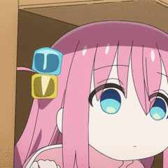

设置边框为圆角  (相当于在盒子角画个圆,取1/4)
~属性名:    ~属性值(圆角半径):数字+px/%

圆角应用:
1.正圆-头像:圆角属性是宽高一半
2.胶囊-按钮:长方形的圆角属性是盒子高度的一半

阴影效果:box-shadow  ~属性值:x轴偏移量 y轴偏移量(xy必须写)  模糊半径 扩散半径 颜色 内外阴影(默认外,内的话inset)
<style>
    .one{
        width: 200px;
        height: 200px;
        background-color: orange;
        margin: 50px auto;

        /* 写多个从左上角顺时针赋值,每取值的与对角一样*/
        border-radius: 20px 80px;
    }
    img{
        width: 200px;
        height: 200px;
        background-color: orange;

        /* 图像也相当于盒子 */
        border-radius: 50%;
    }
    .three{
        width: 200px;
        height: 80px;
        background-color: orange;
        margin: 50px auto;

        border-radius: 40px;

        box-shadow: 2px 5px 10px 1px rgba(0, 0, 0, 0.5);
    }
</style>
<div class="one"></div>
<br><br><br>

<br><br><br>
<div class="three"></div>